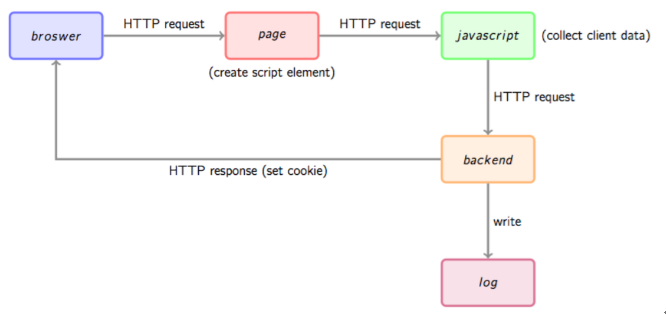

数据平台系列
游戏内容组
Created by 蒋宇
业界方案
一般架构
数据采集
前端采集（埋点）
通过js脚本向后端请求一个数据收集脚本，后端脚本解析参数，同时可能会在http响应中给客户端种植一些用于追踪的cookie。
数据采集
后端采集：Flume
Apache Flume 是一个分布式，可靠且可用的系统，用于有效地从许多不同的源收集、聚合和移动大量日志数据到一个集中式的数据存储区。
Flume 的使用不只限于日志数据。因为数据源可以定制，flume 可以被用来传输大量事件数据，这些数据不仅仅包括网络通讯数据、社交媒体产生的数据、电子邮件信息等等。
数据采集
Flume模型
异步发送消费，可靠性，可恢复性
数据采集
复杂Flume模型：agent串流

数据采集
复杂Flume模型：agent合并
数据接入
数据存储
HDFS
Block:
HDFS 1.x中的block默认大小为64MB,HDFS 2.x中的block默认大小为128MB。每一个block有多个分块（chunk）,小于一个块大小的文件不会占据整个块的空间。块抽象使得文件可以大于任一磁盘容量。
磁盘传输数据的时间=块寻址时间+磁盘文件大小/磁盘传输速率
NameNode和DataNode
NameNode记录每个文件中的块所在的dataNode的信息，而不保留块所在的位置信息，因为位置信息不固定。
DataNode存储并检索数据块，定期向nameNode发送他所存储的块信息的列表。
Secondary NameNode
定期通过日志合并NameNode，状态相对于后者有滞后性，在NameNode节点失效后启用。
数据存储
HDFS读数据
数据存储
HDFS写数据
数据存储
CheckPoint
Demo
Flume集成HDFS
HDFS java API
数据存储(TODO)
HBase
数据计算(TODO)
Hive
Pig
MapReduce
Storm
Spark
Flink